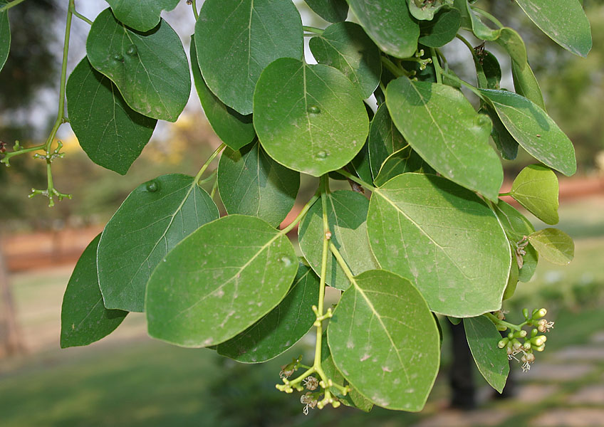

Botanical Name
Cordia dichotoma
Common Names
- Hindi: Lasoda, Dela, Tenti, Gunda
- English: Sebesten, Glue berry, Pink pearl tree, Bird Lime tree, Fragrant manjack, Snotty gobbles, Anonang, Pink pearl, Indian cherry
- Kannada: Challe Kayi, Challa Kayi, Nakara Hannu
- Tulu: Challangayi, Challangai, Chellangai
- Arabic: Dilk
- Bengali: Bahanari
- Punjabi: Lasuda
- Gujarathi: Vadagunda
- Marathi: Bhonkar, Bhokar
- Nepalese: Lasura
- Telugu: Nakkera
- Tamil: Vidi
- Middle East: Bambar tree
Properties
- Rasa (Taste): Bark is Kashaya (Astringent), Tikta (Bitter). Fruit is Madhura (Sweet)
- Guna (Qualities): Snigdha (Slimy), Guru (Heavy)
- Vipaka: Bark - Katu (Pungent taste after digestion), Fruit - Madhura (Sweet)
- Veerya (Potency): Sheeta (Cold)
- Karma (Actions): Fruit is Pitta vata shamaka (reduces vitiated Pitta and Vata dosha), Bark is Kapha Pitta shamaka (reduces Kapha and Pitta dosha)
Part Used
Fruit and Bark
Dosage
- Decoction of bark: 50 to 70 ml
- Fruit juice: 15-20 ml
Chemical Constituents
The leaves of the plant contain B-sitosteryl-3B-glucopyranoside, chlorophyll, and B-sitosterol. The twig of the plant has linoleoyl glycerol. The plant also contains linolenic acid and allantoin.
Uses
- The immature fruits are used for pickles and as vegetable fodder. The leaves also yield good fodder.
- The decoction of the bark is used for cleansing fresh wounds and wounds from insect bites.
- The decoction of the bark is given to treat diarrhea, irritable bowel syndrome, and intestinal worms.
- The juice of the fresh fruit is used to treat burning sensation and dryness of the body.
- The fruit juice is also useful for removing excess phlegm from the lungs and treating cough and asthma.
- The cold infusion of the bark or root is given to treat burning micturition and difficulty in micturition.
Indications
- Bark: Improves hair strength, promotes hair growth, balances Kapha and Pitta Dosha
- Unripe Fruit: Coolant, causes constipation, increases Vata Dosha, astringent, absorbent (useful in diarrhea and IBS), balances Kapha and Pitta Dosha
- Ripe Fruit: Unctuous, increases Kapha Dosha, coolant, heavy to digest
Ayurvedic Medicines
- Gojihwadi Kashaya: Treats fever, cough, bronchitis, rhinitis
- Cofnil Plus Syrup: Treats cough and allergic rhinitis
- Virataradi Kashaya: Treats urinary calculi, difficulty in micturition, and ailments due to Vata disorders
- P-KOF Syrup: Treats cough, cold, and allergic conditions
Sanskrit Synonyms
Shleshmataka, Bahubar, Shelu, Uddalaka, Gandha pushpa, Shapita, Dvijakutsita, Karbudara, Bahudara, Seluka, Bahuvaraka, Muktaphala, Vasanta Kusuma, Shilu, Lekhasara, Sutapadapa, Lekhasataka, Bhutavrukshaka, Bhutadruma, Gandhapushpa